Kilka zdań o nas
Jesteśmy firmą specjalizującą się w myciu
wszelkiego rodzaju powierzchni szklanych.
Posiadamy wieloletnie doświadczenie w tym zakresie i dzięki temu możemy zaoferować
profesjonalne usługi na najwyższym poziomie.
Świadczymy usługi metodą przemysłową,
gwarantującą
doskonałe efekty. Polega ona na
czyszczeniu okien i elewacji szklanych przeznaczonymi do tego myjkami/padami za
pomocą wody i specjalnego mydła a następnie ściągamy zabrudzoną wodę ściągaczkami.

Dzięki odpowiednim narzędziom jesteśmy w stanie
przeprowadzić pracę do 8 metrów nad
ziemią bez użycia drabin podnośników, rusztowań co obniża koszty wykonywanego
zlecenia. Powyżej 8 metrów wykonujemy pracę w oparciu o podnośniki i rusztowania - w
zależności od możliwości. Nie oferujemy usług opartych o techniki alpinistyczne.
Świadczymy nasze usługi głównie na terenie
Warszawy i jej okolic, jednak przy
współpracy z różnego rodzaju sieciami lub przy większych zleceniach oferujemy zasięg
całego Mazowsza.
Nasze usługi skierowane są zarówno do małych
podmiotów takich jak: domy
jednorodzinne, sklepy, zakłady kosmetyczne, fryzjerskie. Jak i do bardzo dużych obiektów
o łącznej powierzchni szklanej do 10 000 m 2
Najczęściej wykonywane zlecenia:
- mycie szyb witrynowych w sieci sklepów, aptek, restauracji, salonów samochodowych;
- mycie okien poremontowe w domach, biurach, lokalach;

- mycie okien w instytucjach Państwowych, szkołach,
przedszkolach, biurowcach;
- mycie elewacji ze szkła w różnego rodzaju budynkach;
- zabezpieczanie szyb/okien przed remontami/budowami.
Przy wykonywaniu tych usług świadczymy również prace
poboczne takie jak czyszczenie
rolet, żaluzji, szyldów, banerów reklamowych, usuwanie graffiti, czyszczenie różnego
rodzaju powierzchni chodnikowych i elewacyjnych myjkami ciśnieniowymi.

Co nas wyróżnia:
Wąską specjalizacja - nie świadczymy innych usług
porządkowych. Skupiamy się na
jednym,
dzięki temu mogliśmy znaczenie pogłębić naszą wiedzę, zoptymalizować system pracy
oraz nabrać niezbędnego doświadczenia i wprawy.
Narzędzia i środki czystości - używamy najwyższej
jakości sprzętu uznanych
producentów, a także odpowiednio dobranych środków czystości do profesjonalnych
zastosowań.

Nastawienie - naszym celem jest budowanie długich
relacji handlowych i dlatego
przykładamy dużą wagę do potrzeb i oczekiwań naszych klientów. Wychodzimy z
założenia, że zadowolenie naszych klientów jest podstawą długiej współpracy.
Dobra komunikacja – zawsze, gdy podejmujemy się
nowego zlecenia wcześniej ustalamy
szczegóły takie jak koszt, termin, czas trwania prac i godziny ich wykonywania. Staramy
się, aby każdy klient wiedział czego ma się spodziewać
Zapraszamy Państwa do kontaktowania się z nami, a my
ze swojej strony dołożymy
starań, aby dołączyli Państwo do grona zadowolonych z naszych usług klientów.